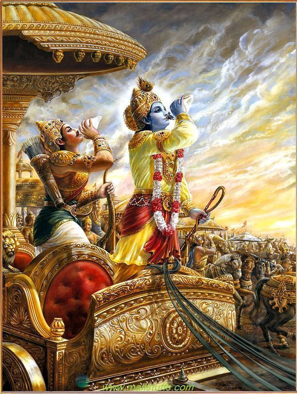

Introduction
The Mahabharata, one of the greatest epics of ancient India, is a timeless tale of power, morality, and duty. Central to this grand narrative is the figure of Lord Krishna, who plays a pivotal role in the unfolding of events. Krishna, revered as an incarnation of Vishnu, is not just a character in the Mahabharata but also a divine guide, friend, and philosopher. His wisdom, delivered through the Bhagavad Gita, has inspired generations and continues to be a source of spiritual guidance for millions around the world.
The Mahabharata itself is a complex narrative of familial conflict, war, and righteousness, spanning over 100,000 verses. It tells the story of the Kurukshetra War, a cataclysmic battle between the Pandavas and the Kauravas, two branches of the same royal family. Krishna's involvement in the Mahabharata goes beyond that of a mere participant; he is the charioteer of Arjuna, the Pandava prince, and the divine strategist who guides the course of the war.
Krishna's Role in the Mahabharata
Krishna's role in the Mahabharata is multifaceted. He is a friend to the Pandavas, particularly Arjuna, and serves as their advisor and protector throughout their trials. His divine nature is revealed in various instances, but he chooses to act as a human, guiding the Pandavas with wisdom and strategy. Krishna’s involvement begins long before the war, as he helps the Pandavas during their exile and ensures their safety against the numerous threats posed by the Kauravas.
One of Krishna's significant contributions is his role as a diplomat. Before the war, Krishna attempts to mediate peace between the Pandavas and the Kauravas. He goes to Hastinapur, the capital of the Kauravas, as a peace ambassador, but his efforts are in vain. Duryodhana, the leader of the Kauravas, refuses to give even a needlepoint of land to the Pandavas. This refusal leads to the inevitability of war, where Krishna’s strategic mind becomes crucial in securing victory for the Pandavas.
During the war, Krishna takes on the role of Arjuna’s charioteer. This position, though seemingly humble, allows Krishna to steer the battle’s course. The famous moment where Krishna reveals his divine form to Arjuna, known as the Vishvarupa, is a testament to his godly power and his central role in the cosmic order. Despite his divine status, Krishna does not engage directly in the battle, adhering to his vow of not picking up arms. Instead, he uses his intellect and moral guidance to influence the war’s outcome.
Teachings of Krishna in the Mahabharata
Krishna’s teachings in the Mahabharata are profound and cover various aspects of life, duty, and spirituality. He emphasizes the importance of Dharma (righteousness) and the need to perform one’s duty without attachment to the results. This concept is central to the Bhagavad Gita, where Krishna explains the nature of the self, the impermanence of the material world, and the eternal nature of the soul.
One of the key teachings of Krishna is the concept of Karma Yoga, the path of selfless action. Krishna advises Arjuna to perform his duty as a warrior, to fight in the battle, but to do so without attachment or desire for the rewards of his actions. This teaching underscores the idea that one should act according to their Dharma, fulfilling their responsibilities while maintaining inner detachment.
Another important teaching is the notion of Bhakti, or devotion to God. Krishna emphasizes that true devotion transcends ritualistic worship and is rooted in unwavering love and surrender to the divine. He assures Arjuna that anyone who worships him with pure devotion, regardless of their status or background, will attain liberation.
Krishna also discusses the concept of the three Gunas – Sattva (goodness), Rajas (passion), and Tamas (ignorance) – which influence human behavior and consciousness. He explains that these Gunas bind the soul to the physical world, and one must rise above them to achieve spiritual liberation. By cultivating Sattva and overcoming the other two Gunas, one can progress on the path to enlightenment

The Bhagavad Gita
The Bhagavad Gita, often referred to as the Gita, is a 700-verse dialogue between Krishna and Arjuna that takes place on the battlefield of Kurukshetra, just before the war begins. The Gita is not only a philosophical text but also a spiritual guide that addresses the moral and ethical dilemmas faced by Arjuna. It is one of the most revered texts in Hindu philosophy and has been studied and interpreted by scholars and spiritual leaders for centuries.

The dialogue begins with Arjuna, overwhelmed with grief and moral confusion, refusing to fight in the battle. He is torn between his duty as a warrior and his love for his family members who are on the opposing side. In response, Krishna imparts wisdom that addresses the fundamental questions of life, duty, and the nature of reality. He explains that the body is temporary and the soul is eternal, and that one should not grieve for the inevitable death of the body.
Krishna introduces Arjuna to various paths to spiritual liberation, including Karma Yoga (the path of action), Bhakti Yoga (the path of devotion), and Jnana Yoga (the path of knowledge). Each path is a means to attain union with the divine, and Krishna emphasizes that all paths ultimately lead to him. The Gita’s teachings are universal, transcending the specific context of the Mahabharata and offering timeless wisdom that is relevant to all aspects of life.
The Bhagavad Gita also discusses the concept of Svadharma, or one’s own duty. Krishna urges Arjuna to follow his Svadh.